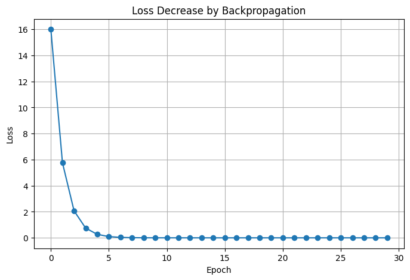
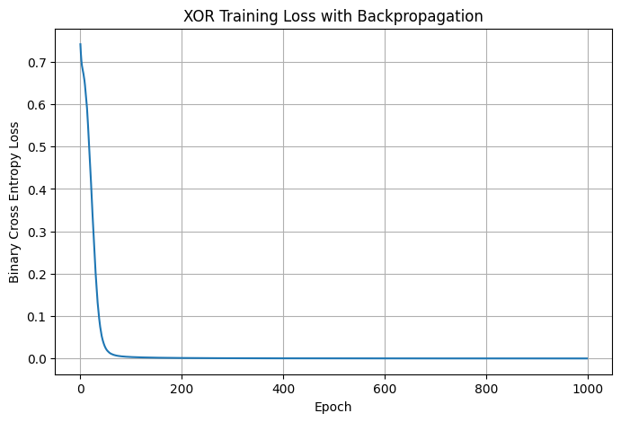

loss.backward()가 정확히 무엇을 계산하는지, 그리고 학습이 끝난 뒤 그 결과물을 어떻게 보존해 재사용하는지를 분리해서 들여다봤다.CH 01작은 수식 하나로 본 역전파의 정체#
학습 / 의문
신경망을 통째로 두고 보면 역전파가 마법처럼 보인다. 그래서 계층을 다 걷어내고 가장 작은 식 하나만 남겼다. 입력 x=2, 가중치 w=3, 정답 target=10으로 두고 예측을 x*w, 손실을 (target - 예측)²로 정의했다. 여기서 궁금한 것은 단 하나, loss.backward()가 끝난 뒤 w.grad에 어떤 값이 들어가는가였다.
시행 / 테스트
예측은 2*3=6, 손실은 (10-6)²=16이다. 손실 식을 w로 미분하면 기울기는 -2·x·(target - 예측) = -2·2·4 = -16이 된다. 실제로 backward()를 호출하고 w.grad를 찍어보니 같은 값이 나왔다.
입력값 x: 2.0 초기 가중치 w: 3.0 예측값: 6.0 정답값: 10.0 손실값: 16.0 w에 대한 기울기: -16.0
관찰
기울기가 음수라는 것은 w를 키우는 방향으로 손실이 줄어든다는 뜻이다. 그래서 경사하강법은 기울기의 반대 방향, 즉 w = w - 학습률·기울기로 가중치를 옮긴다. 학습률 0.01을 적용하면 3 - 0.01·(-16) = 3.16이 되고, 출력도 3.1600000858306885로 일치했다.
# 수동 경사하강 한 스텝
loss.backward() # w.grad에 기울기 누적
with torch.no_grad():
w -= learning_rate * w.grad # 기울기 반대 방향으로 한 걸음
w.grad.zero_() # 다음 계산 전 기울기 초기화CH 02반복하면 손실이 0으로 가는지 확인#
학습 / 의문
한 스텝으로 w가 3.16이 됐다면, 같은 과정을 반복하면 정답 가중치에 수렴할까. x=2, target=10이므로 손실이 0이 되려면 2·w=10, 곧 w=5가 되어야 한다. 학습률을 0.05로 올리고 30회 반복했다.
시행 / 테스트
epoch=01, w=3.8000, prediction=6.0000, loss=16.0000 epoch=02, w=4.2800, prediction=7.6000, loss=5.7600 epoch=03, w=4.5680, prediction=8.5600, loss=2.0736 epoch=05, w=4.8445, prediction=9.4816, loss=0.2687 epoch=10, w=4.9879, prediction=9.9597, loss=0.0016 epoch=14, w=4.9984, prediction=9.9948, loss=0.0000 epoch=30, w=5.0000, prediction=10.0000, loss=0.0000
관찰
w는 3에서 출발해 5로 수렴했고, 손실은 16에서 사실상 0까지 내려갔다. 정답에 가까워질수록 기울기 자체가 작아져서 한 걸음의 폭도 점점 줄어드는 모습이 그대로 보인다.

CH 03선형 회귀와 XOR, 자동 미분이 떠맡는 부분#
학습 / 의문
가중치가 하나일 때는 손으로 기울기를 따라갈 수 있었다. 그런데 가중치와 편향이 여럿이고 계층이 쌓이면 이 미분을 누가 다 해주는가. PyTorch에서는 optimizer.zero_grad(), loss.backward(), optimizer.step() 세 줄이 그 일을 맡는다. 먼저 y = 2x + 1을 학습하는 선형 회귀로 확인했다.
시행 / 테스트
nn.Linear(1, 1)에 MSE 손실과 SGD를 붙여 300회 학습했다. weight와 bias가 각각 목표인 2와 1로 다가가는지 봤다.
학습된 weight: 1.983961582183838 학습된 bias: 1.05790376663208 x=10일 때 예측값: 20.897518157958984
관찰
weight는 1.984, bias는 1.058로 정답 부근에 자리 잡았고, x=10 예측은 20.9였다. 정확히 21이 아닌 이유는 300회로는 아직 완전히 수렴하지 않은 상태이기 때문이다. 세 줄 호출 안에서 weight와 bias 두 파라미터의 기울기가 동시에 계산되어 갱신됐다.
테스트
다음은 직선 하나로 나눌 수 없는 XOR이다. Linear(2,8) → ReLU → Linear(8,1) → Sigmoid 구조에 BCE 손실과 Adam을 붙여 1000회 학습했다. 은닉층과 비선형 활성화가 더해지면 역전파가 여러 계층을 거슬러 올라가야 한다.
예측 확률:
tensor([[6.0647e-05],
[9.9992e-01],
[9.9993e-01],
[8.2106e-05]])
예측 클래스:
tensor([[0.], [1.], [1.], [0.]])
실제 정답:
tensor([[0.], [1.], [1.], [0.]])
결론(중간)
네 입력 모두 정답 클래스를 맞혔고, 확률은 0과 1 양 끝으로 갈렸다. 가중치가 105개로 늘어도 학습 루프의 세 줄은 그대로다. 자동 미분이 계층을 거슬러 각 파라미터의 기울기를 채워주기 때문에, 손으로 미분하던 일은 더 이상 직접 할 필요가 없었다.
CH 04학습된 모델을 떼어내 다시 쓰기#
학습 / 의문
학습이 끝난 가중치는 메모리에만 있다. 프로그램을 닫으면 사라진다. 그래서 결과물을 파일로 남기고, 새 프로세스에서 다시 불러와 예측에 쓰는 방법을 확인했다. PyTorch에서는 가중치만 담은 state_dict를 저장하는 방식을 썼다.
시행 / 테스트
y=2x 데이터로 학습한 모델을 torch.save(model.state_dict(), 'pytorch_model.pth')로 저장했다. 불러올 때는 같은 SimpleModel 클래스를 다시 정의해 빈 객체를 만들고, load_state_dict()로 가중치를 채운 뒤 eval()과 torch.no_grad()로 x=5를 예측했다. 같은 절차를 TensorFlow에서는 모델 전체를 .keras로 저장·복원하는 방식으로 비교했다.
PyTorch 예측 결과 : 10.011872291564941 TensorFlow 예측 결과 : [[9.977701]]
관찰
두 프레임워크 모두 정답인 10에 가까운 값을 돌려줬다. 핵심 차이는 PyTorch는 구조 코드를 따로 가지고 있어야 가중치를 끼울 수 있는 반면, TensorFlow의 .keras는 구조와 가중치를 한 파일에 담아 한 줄로 복원된다는 점이다.
CH 05재학습과 과소적합, 두 가지 의문 정리#
의문
저장과 불러오기를 정리하다 보니 두 가지가 걸렸다. 하나는 "파인튜닝이라는 게 결국 모델을 불러와 다시 학습시키는 것 아닌가"였고, 다른 하나는 TensorFlow 저장 예제에서 fit(X, y)만 했을 때 x=5 예측이 10이 아니라 6.8 근처로 나온 이유였다.
테스트
첫 의문은 방향은 맞되 그대로 다시 돌리는 것과는 다르다. 보통은 특징을 뽑는 앞부분(백본)의 가중치를 동결해 기존 지식을 보존하고, 목적에 맞게 출력층(헤드)만 교체한 뒤, 평소보다 훨씬 낮은 학습률로 조심스럽게 미세조정한다. 두 번째 의문은 학습 횟수를 직접 바꿔보며 확인했다.
Epoch 1 prediction: [[6.2447696]] Epoch 500 prediction: [[9.903336]]
결론(중간)
Keras의 fit은 epochs를 생략하면 기본값이 1이다. 4개 데이터를 한 번만 훑고 끝났으니 규칙을 채 못 익힌 과소적합 상태였고, 그래서 6.8 같은 값이 나온 것이다. epochs=500으로 올리자 9.9까지 정상으로 다가갔다. 낮은 정확도는 모델 결함이 아니라 학습량 부족이었다.
📚 근거 출처
- 실습 코드 —
from_colab_deep_learning/0615-s(backpropagation · model_save_usage) - 강의 PDF — 딥러닝_모델저장및활용
- 공식 문서 — PyTorch Autograd·torch.save